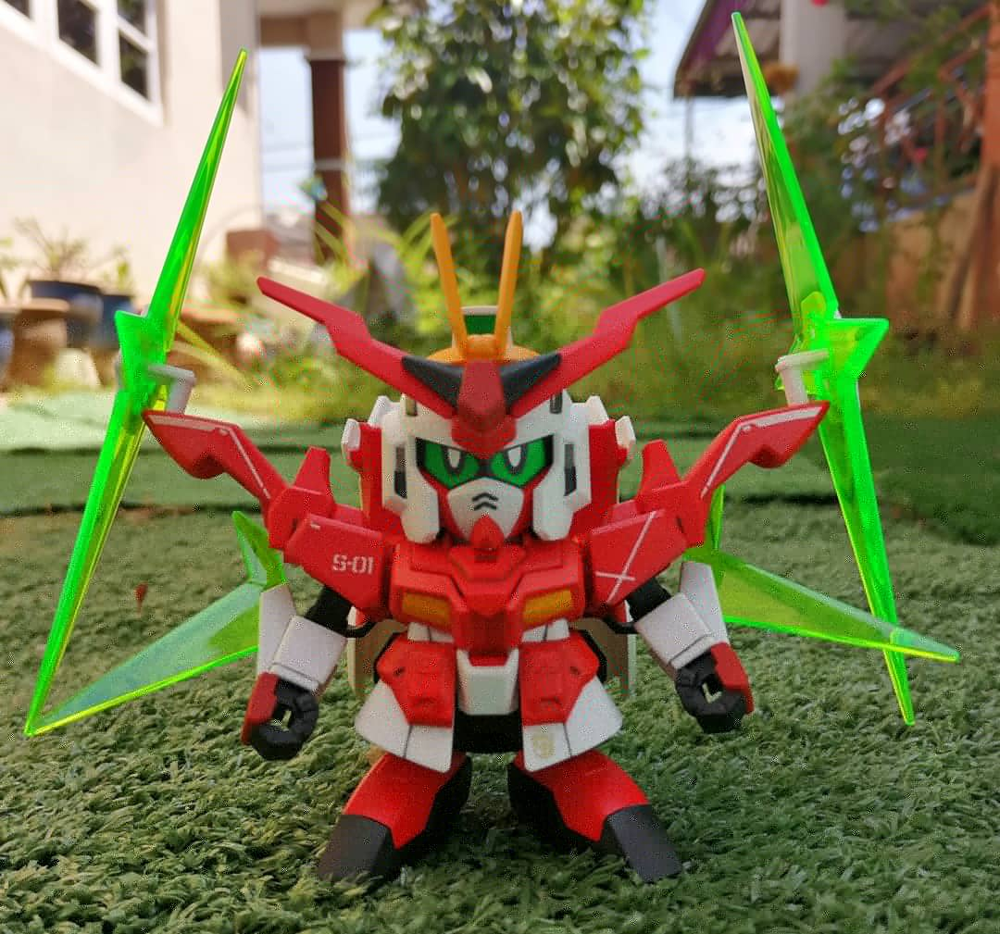
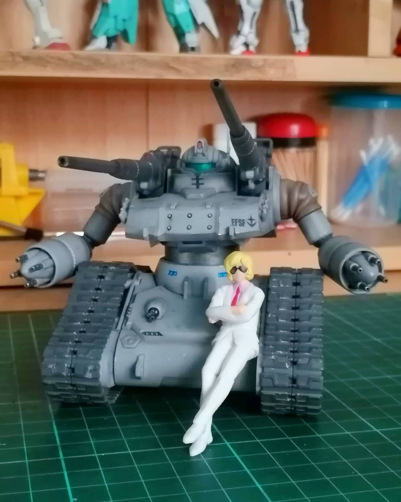

GUNPLA

SD Star Winning Gundam ver. Winning Fumina
Completed Kit | 30 Sept 2020
SD that was used along with Fumina to transform into Winning Fumina. Was given to my senior as her birthday gift.

HG Guntank Early Type
Completed Kit | 14 Sept 2020
An early type Guntank before it's actual production used in One Year War along with RX-78-2. Weathering effect and a little paint done on it.
HG Gundam Hajiroboshi
Completed Kit | 10 Sept 2020
Redesign from Gundam Marchosias after it was found in Jupiter. Painted to match with the accuracy of the model.
HG Gundam Kyrios, Arios & Harute
Completed Kit | 10 August 2020
MS that was piloted by Allelujah Haptism. Commissioned to me to fix the kit and paint it to bring out the details.
HG Nepteight Gundam
Completed Kit | 30 July 2020
A planet system that was used by Hiroto in his mission to defeat Alus. Was painted by me to bring out the important detail in it's design.